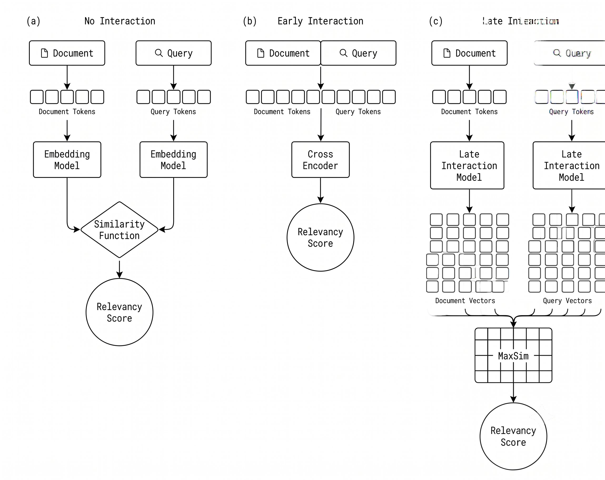
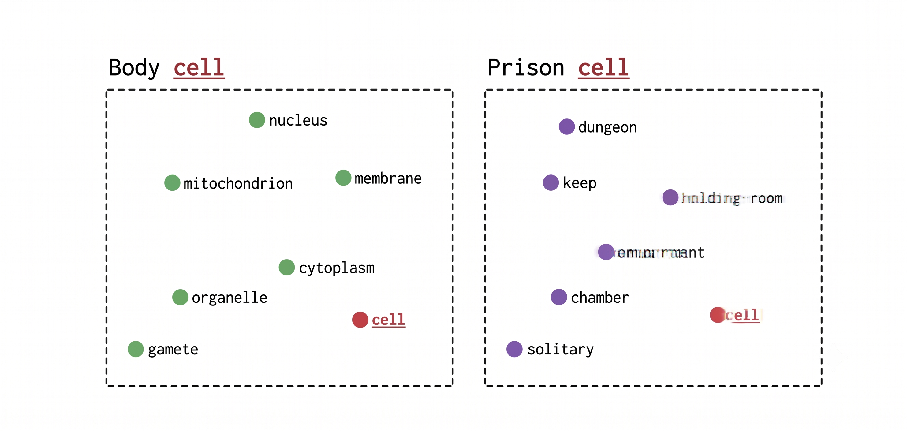

Why Timing Is Everything in Semantic Search
1. Introduction
Search systems live and die by one design choice that rarely gets enough attention: how a query and a document are actually compared to each other under the hood. Get this choice right, and results feel sharp and relevant. Get it wrong, and even a well-tuned system starts returning near misses. This choice comes down to a single question.
When building a search system, one fundamental question emerges. When should a query and document interact?
The answer to this question affects both the quality of your search results and your system's scalability.
In this post, we'll introduce the late interaction paradigm, the foundation of multivector search, and explore how it compares to other approaches. By the end, you'll understand why late interaction offers a compelling middle ground between fast but imprecise methods and accurate but slow ones.
There are various models available and one fundamental question is which one should I use in my search system?
2. What Do We Mean By Interaction?
Before we get into late interaction itself, it's worth being precise about what "interaction" actually means here. Every search system has to decide, at some point, whether the query and the document are allowed to influence each other's representation, and if so, when. Some systems keep the two completely separate until the very last step. Others mix them together from the very first layer of the encoder. That single decision, more than anything else, determines how the system scales and how precise it can be.
On one end, we have no interaction. The query and document are encoded completely independently into fixed representations, then compared. They never see each other during encoding. This approach is fast but it loses nuance because everything gets compressed into a single point.
On the other end, we have early interaction. This is where cross encoders live. The query and document are encoded together with each word attending to the other during the encoding process. You get maximum interaction but no precomputation is possible, so it doesn't scale.
And in the middle we have late interaction. The query and document are encoded independently just like the no interaction approach but we preserve fine grain token level representations that interact during scoring. The interaction happens late only when we compute relevancy scores. It gives you the best of both worlds.
- No Interaction: Encode separately, compare single vectors. Fast but loses nuance.
- Early Interaction: Cross-encoders process together. Precise but can't scale.
- Late Interaction: Encode separately, compare at token level. Best of both worlds.

This diagram shows the three paradigms side by side. Notice how late interaction preserves the independent encoding but adds the token level comparison step at the end. The key insight is that we get the precomputation benefits of no interaction with the precision benefits of comparing at the token level. Let's look at each paradigm on its own before we get to how late interaction actually pulls this off.
2.1 No Interaction
This is the strategy most search systems use today: squeeze the whole document down into one dense vector, do the same for the query, and then measure how close the two vectors sit to each other, usually with cosine similarity.
Its biggest selling point is efficiency. Because the document side never depends on the query, every document vector can be computed ahead of time and simply looked up later. That's what lets this approach hold up even when a collection grows into the billions.
The cost of that efficiency is detail. Squashing an entire document into one vector is a bit like reducing a whole novel down to a single tagline, you get the gist, but anything specific enough to matter for a particular question tends to get flattened out along the way.
Under the hood, the model doesn't skip token level detail entirely, it computes it and then throws it away. Every token gets its own embedding first, and only afterward are those embeddings collapsed, usually by averaging them or by reading off a special summary token, into the one vector that actually gets stored. Whatever nuance lived in those individual token embeddings doesn't survive the collapse.
2.2 Early Interaction
Cross-encoders take the opposite bet. Rather than encoding the query and document apart and comparing them afterward, they feed both into the same network at once and let the model output a relevance score directly. Because the mixing happens right there in the encoder, this is what counts as early interaction.
What you get in return is genuinely deep understanding. Since every word in the query can look directly at every word in the document while the model is still forming its representation, the relevance judgments it produces tend to be very precise.
The catch is that none of this can be prepared in advance. Every single query-document pair has to be run through the network from scratch. Search a million documents, and a single query means a million full passes through the model, which is simply too slow to use as a first pass over a large collection.
That's why cross-encoders tend to show up later in a pipeline, re-scoring a short list of candidates rather than searching the whole collection. Nothing about a document can be computed once and reused, so every new query starts the work over from zero.
3. Caught Between Two Extremes
Put the two approaches side by side and the problem becomes obvious. One end of the spectrum is fast and scalable but shallow. The other end is precise but grinds to a halt on anything larger than a small candidate list. Neither one is really usable on its own for large scale, high precision search. What's actually needed is a way to keep the pre-computation advantage of the first approach while still getting something close to the token level precision of the second. Closing that gap is the whole point of late interaction.
4. Late Interaction
The trick late interaction uses is almost stubbornly simple. Encode the query and the document independently, same as before, but instead of collapsing each one down to a single vector, hang on to a separate vector for every token, and don't compare anything until search time actually arrives. A document stops being one point in space and becomes a whole cloud of them, one per token, each still carrying its own contextual meaning.
Here is the key insight. Instead of one vector per document, we create one vector per token. If your document has 200 tokens, you get 200 vectors.
We store all those token vectors. No pooling, no compression. The fine grain information stays intact. Unlike single vector search where we aggregate everything into one vector, we keep all the token vectors.
At query time, we do the same thing, encode the query into token vectors. Then we compare query tokens against document tokens. Each query token finds its best match among the document tokens.
The interaction is late because it only happens during scoring. Documents are encoded once, stored, and reused for every query. This is the key to scalability.
Strip away the detail and the whole mechanism comes down to one habit: never reduce a token to something less than itself, and never let two things interact before you actually need an answer.
Looked at this way, late interaction isn't really a third, unrelated idea, it's a hybrid that keeps one property from each of the earlier approaches. Like a cross-encoder, it holds onto fine, token-level detail instead of averaging it away. Like single-vector search, it never lets the query touch the document during encoding, which is exactly what makes pre-computation possible in the first place.
.png)
Here's the late interaction workflow in detail. At indexing time, pass the document through an encoder to generate one embedding vector per token. Then store them all. At query time, encode the query the same way.
One vector per query token, compare token by token and aggregate into the final score.
5. Enter ColBERT
The model most associated with this idea is ColBERT, which stands for Contextualized Late Interaction over BERT and came out of Stanford. It's the paper that really put late interaction on the map, by showing it could match the accuracy people expected from cross-encoders while still running at roughly the speed of single-vector search.
Its central move is refusing to throw anything away too early. Rather than pooling a document into one vector, ColBERT holds onto the full set of contextualized token vectors and waits, comparing them against the query's token vectors only once an actual search is being run.
That single choice, to keep the set of vectors instead of pooling it away, is really what the rest of this post has been building toward.
6. What This Buys You
Late interaction isn't just a technical optimization, it's a genuine shift in how we think about semantic search.
Precomputation is the big win. Document embeddings can be computed once, stored, and reused for millions of queries. You don't need to re-encode documents for every query.
Fine grain matching means a query about Apple computer can actually distinguish the company from the fruit. Different query tokens can match different parts of the documents. This is something single vector search simply cannot do.
Contextual understanding comes from the model. The word bank has different embeddings in river bank versus financial bank.
The context shapes each token's representation. This contextual precision is what makes late interaction so powerful.
Put together, that's three things stacked on top of each other: the heavy lifting on the document side happens once and gets reused forever, individual terms can still be told apart from each other inside a query, and the surrounding words shape what each token actually means. None of that is available to a system that only ever produces one vector per document.

This example shows why context matters. Same word, completely different embeddings, because the surrounding text changes the meaning. The token embeddings are contextualized by surrounding text enabling precise semantic matching.
There's a knock-on benefit here too. Since a document is represented by many vectors instead of one, it doesn't have to boil down to a single "topic" anymore. A document that genuinely covers more than one idea can still surface for a query about just one of those ideas, because that query only needs to line up with the handful of tokens that are actually relevant to it, not with an average of everything the document talks about.
And on the scaling side, the cost of searching grows along with the size of the collection, not with every possible query-document pairing the way a cross-encoder's does. That's the difference between a technique that works in a notebook and one that works in production.
7. Conclusion
Understanding the conceptual foundation of late interaction is the first step. At its core, the idea is simple: don't force a query and a document to collapse into a single point before comparing them, and don't force them to interact so early that nothing can be precomputed. Encode independently, keep every token vector, and let the interaction happen late, only during scoring.
That's what makes late interaction the best of both worlds. It keeps the precomputation benefits of no interaction, so document embeddings can be computed once, stored, and reused for millions of queries. And it keeps the precision benefits of comparing at the token level, so fine grain matching and contextual understanding are never averaged away.
But there is an important question we haven't answered yet. How exactly do we compare sets of query vectors against sets of document vectors?
In the next article, you'll learn about MaxSim, the distance metric that powers late interaction search. MaxSim defines the specific mathematical operation for computing similarity between multivector representations and understanding it is key to understanding both the power and challenges of this approach.